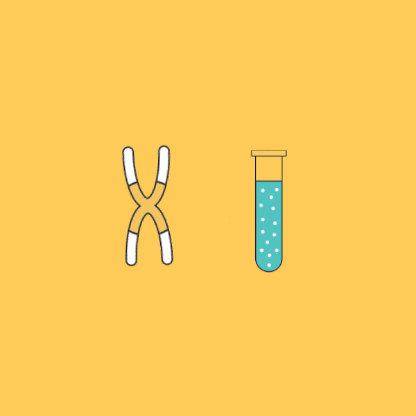

을유시리즈
-
[ 책을쓰는 과학자들 ] 미리보기
새들은 다 어디로 갔을까?
“새들은 다 어디로 갔을까? 많은 이들이 당혹스럽고 언짢은 마음으로 새 이야기를 했다. 뒷마당에 둔 모이통은 새들의 발길이 끊기고, 어쩌다 나타난 몇 마리는 몸을 격렬히 떨거나 날지 못해서 죽기 일보 직전이었다. 아무 소리도 들리지 않는 봄이었다.”
-
[ 유전자사회 ] 미리보기
유전자사회
암을 유발하는 돌연변이 두 개를 갖고 있는 유전체는 분열하기가 더 쉬워진다. 돌연변이 두 개를 갖고 있는 세포들은 돌연변이 하나를 갖고 있는 자매세포들보다 더 빨리 분열할 것이다. 돌연변이 두 개를 가진 후손들이 수백만 개가 되어 강해지면, 다음 돌연변이가 일어날 가능성은 증가한다. 이런 과정은 생명체의 방어가 모두 전복될 때까지 계속된다.
-
[ 코코샤넬 ] 미리보기
나의 시대가 나를 기다리고 있었다.
양차 세계 대전 사이의 프랑스의 정치 환경을 고려해 볼 때 샤넬은 역설적인 존재였다. 샤넬은 개인적 신념 때문에 분명히 초기 파시스트 진영에 속했다. 그녀는 확고한 민족주의자이자 극단적 보수주의자, 독일 지지자, 왕정주의자였다.
-
[ 매혹과 잔혹의 커피사 ] 미리보기
새로운 커피쟁이들의 출현
초판 출간 당시 커피 애호가들에게 큰 반향을 불러일으키며 커피에 관한 결정판으로 불렸던 『매혹과 잔혹의 커피사』 개정 증보판이 출간되었다. 이 책은 커피의 기원부터 오늘날까지, 커피의 정치․경제․문화를 돌아보며, 흥미진진한 이야기로 가득한 커피의 역사 속으로 독자들을 안내한다.